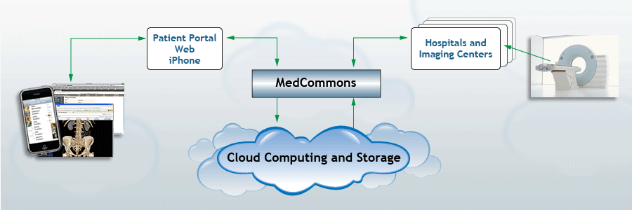

|  |
 |
 |
 |
 |
Platform OperationsOperationsA MedCommons instance is configured via a one-time dialogue that enables feature sets, certificates, and customization at the appliance owner’s preferences. Once configured, the system is managed via the included Appliance Console.ConsoleThe MedCommons Console is the primary access point for the system operator. A console operator account (id and password) is required for access. It provides management capabilities for users, user groups, fax services, backup and restore services, patient and doctor keys, access logs, and MedCommons account billing. The console also status information and real-time health indicators for each of the services in the licensee’s system.LoggingThe MedCommons system maintains a variety of logs including both System Logs and Account Level Logs and provides for easy console access. The system logs include Apache, boot, tomcat, rpm and other server logs. The application logs include a Log of Account Accesses, and CCR Merge Logs. The Account Activity Log is special. It is designed for both the Doctor and Patient to understand so it labels things plainly. It is accessible only to users authorized to read the account so that it can contain PHI.PerformanceThe system can scale as needed by adding additional MedCommons Appliances, and connecting the Gateway Server component into a shared Load Balancer. The system will warn the Console Operator when overloaded.Automated Component UpdateAutomation is provided for retrieving and installing updated MedCommons software components on an appliance. Update installation requires a brief service interruption on single-appliance instances. Updates can be incrementally rolled onto service nodes in a Flex clustered instance without interruption.Availability, Failover and RecoveryA single appliance instance of MedCommons can be only as available as the server it’s on. It can however can be restored in minutes without requiring network DNS changes – depending on the infrastructure on which it’s hosted (replacing a failed physical server can be long even if a spare is available on site). On a VM server, it’s more or less instantaneous.Restoration of service is accomplished by launching a replacement instance with the original MedCommons system image and recovering it’s configuration, database and records repository contents. Deployments on AWS/EC2 and S3 use AWS/EBS network disk volumes for configuration and DBMS storage and they archive ePHI to AWS/S3. Associating the EBS volume (containing configuration and database) with the replacement instance recovers it’s configuration and database. In normal operation after service is resumed, ePHI is retrieved as required from the archive. A multiple appliance clustered instance is resilient to failures of individual service nodes. Clustered configurations however share a DMBS and records repository each of which is a single point of failure for the instance. Clustered configurations deployed with standard MySQL are subject to service interruptions caused by failure of the DBMS server against which MySQL/Cluster can be used. The shared ePHI repository is a second single point of failure against which highly available/redundant SAN/NAS storage can be used. Absent an actual MySQL cluster, MedCommons cluster instances are deployed with master/slave DBMS pairs such that DBMS service can be restored after failure of the DBMS master node by promoting the slave DBMS and reconfiguring MedCommons service nodes. Recovering a MedCommons cluster instance from failure of shared ePHI repository storage requires replacement of the storage after which retrieval of ePHI from the archive is automatic in the course or normal operation if the archiving service in use. If not, ePHI must be restored from backup. Deployments on AWS/EC2 use EBS network disk volumes as primary storage for a NAS server which hosts the shared repository. These include a hot standby for that server such that recovery can be accomplished by associating the EBS volume with the standby and reconfiguring the service nodes. |
| © MedCommons Inc. 2009 | |